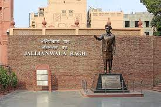
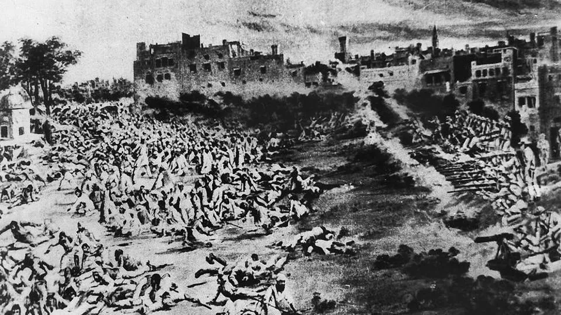

Very few moments in the history of our sub-continent are as repulsive to remember and yet as significant to history as the infamous Jallianwala Bagh massacre. The horrendous incident of the brutal, cold-blooded murder of 500 to 600 peaceful protestors at the hands of British imperialist rule is considered a dark chapter in the history of the Indian struggle for independence.
The Jallianwala Bagh massacre took place on April 13, 1919, when a group of peaceful protestors was gunned down in an enclosed park with only one exit. To commemorate the spirits of all the innocent lives lost in this incident, the Government of India erected a monument in 1951. A museum was also opened in March 2019, known as Yaad-e-Jallian Museum, to put forth an authentic account of the massacre.
BACKGROUND OF JALLIANWALA BAGH MASSACARE
If we want to understand the root causes of the Jallianwala Bagh massacre, we need to understand that it was heavily dependent on the politics of that time.
The British government was dealing with the growing nationalist surge among the people in India and, at the same time, fighting World War I in 1919.
To crush the growing nationalist sentiments, the British Legislative Council in London in 1919 passed a controversial act, known as the Rowlatt Act, after recommendations from the Rowlatt Committee, headed by Sidney Rowlatt.
Officially, the Rowlatt Act was known as the Anarchical Revolutionary Crimes Act, 1919.
As per the recommendations, two bills were introduced in the Central Legislature, which later came to be known as "Black Bills”.
This controversial act gave the British tyrannical powers to arrest any individual living in British India and suspected of revolutionary activities for 2 years without trial or judicial review.
The act was passed despite united opposition from the Indian Members of the Imperial Legislative Council.

The tyrannical nature of the act caused discontentment in the people, and when Mahatma Gandhi called for Satyagraha against the Rowlatt Act, the response was undoubtedly huge.
The movement and protests spread throughout the country, reaching Punjab as well, where the situation was about to explode.
In Lahore, the largest city of Punjab at the time, the number of protestors was so immense that it seemed like the whole city came out on the streets.
Many leaders resigned from the Imperial Legislative Council, like Madan Mohan Malviya, Muhammad Ali Jinnah, and Mazhar ul Haq.
The British Lieutenant-governor of Punjab, at the time, Michael O'Dwyer, was especially alarmed about this, suspecting that a revolt was imminent.
Satyagraha against the Rowlatt Act was initiated on April 6, 1919.
Dr Saifuddin Kitchlew and Dr Satyapal spearheaded the protests in Amritsar, Punjab against the Rowlatt Act and inspired Hindu-Muslim unity among the masses.
Michael O'Dwyer, intending to crush the movement, ordered the arrest of Dr Saifuddin & Satyapal on April 9, 1919, which was carried out the next day.
Armed with the Rowlatt Act, the British Administration set out to eradicate the nationalist movement.
By April 13, 1919, the whole of Punjab was under martial law and all public gatherings and meetings were banned.

Eventually, due to the brave struggle and sacrifice of such freedom fighters, the British had to relinquish their rule over India on August 15, 1945, which they had dreamt of ruling for centuries to come. The remembrance of this inhumane part of history will ensure that our coming generations learn to stand up to injustice.